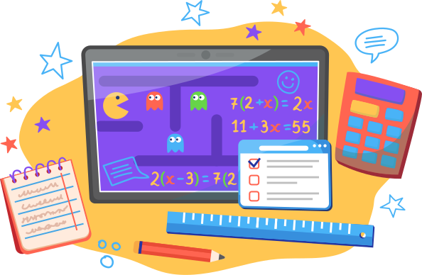

Кому подходит онлайн образование?

Для тех, кто хочет получать знания
Для путешественников
Для семейного обучения
Для спортсменов
Для проживающих за рубежом
Первый месяц обучения от 5 250 руб
Не знаете подойдет ли вашему ребенку обучение онлайн? Попробуйте первый месяц со скидкой 50%!
Как проходят уроки в нашей онлайн школе?
Живые уроки с учителем
Увлекательные уроки с учителем, на которых каждому ребенку будет уделено внимание
Дополнительные материалы
Материалы по каждой теме без лишней воды помогут закрепить знания
Домашнее задание
Для закрепления всего ранее полученного материала дети получают домашнее задание
Проверка и оценка
Все домашние задания проверяются учителем и выставляется оценка в дневник
Дети любят наши уроки потому что:
Продвинутая геймификация
Мы используем мини-игры чтобы увлечь ребенка в процесс решения задач и помочь усвоить материал в интересной форме
Не зубрят и не переписывают учебники
Дети вовлечены в урок по средствам взаимодействия между собой и педагогом. Играют в тематические квизы. Смотрят видео и разбирают материал.
Никакого стресса
В учебных классах поддерживается атмосфера дружбы и уважения. Никакого давления. Дети чувствуют себя комфортно
Глянем сравнение:
Обычная школа
Число детей в классе
от 25Количество уроков
5-6 в деньДополнительные занятия
обязательноИндивидуальный подход
нетГибкий график занятий
нетСобрать ребенка в школу
от 30 тыс. рублей
Онлайн школа
Число детей в классе
до 12Количество уроков
2-3 в деньДополнительные занятия
по желаниюИндивидуальный подход
даГибкий график занятий
даСобрать ребенка в школу
0 рублей
Онлайн школа среднего образования это -
Удобный график занятий
Вы можете выбрать удобное время начала занятий (9:00, 11:00 или 13:00)
Записи уроков доступны всегда
Пропустил урок — не страшно! Записи уроков можно посмотреть в любое время
Сбалансированная нагрузка
Никаких лишних и не нужных занятий. Только важное и необходимое
Не нужно покупать школьную форму и канцелярию
Тетрадка, ручка, линейка и карандаш — это все, что нужно для учебы в онлайн школе!
Высококлассные педагоги
Опытные учителя прошедшие строгий отбор и использующие современные методы обучения
Никакого стресса
В учебных классах поддерживается атмосфера дружбы и уважения. Никакого давления. Дети чувствуют себя комфортно
Первый месяц обучения от 5 250 руб
Не знаете подойдет ли вашему ребенку обучение онлайн? Попробуйте первый месяц со скидкой 50%!
Сколько стоит обучение в онлайн школе?
10 500 ₽/мес
1-4 класс
Веселые и увлекательные уроки
- 2-3 урока в день пн-чт
- 10-12 учеников в классе
- внимание к каждому ребенку
- интерактивные тренажеры
- игровая форма обучения
- зачисление в школу партнер 12 000/год

12 500 ₽/мес
5-8 класс
Помогаем не потерять интерес
- 3-5 уроков в день пн-пт
- 12-15 учеников в классе
- внимание к каждому ребенку
- интерактивные тренажеры
- усиленная подготовка к ОГЭ
- зачисление в школу партнер 12 000/год
16 500 ₽/мес
9-11 класс
Самый важный этап в жизни
- 4-5 уроков в день пн-пт
- 12-15 учеников в классе
- внимание к каждому ребенку
- интерактивные тренажеры
- усиленная подготовка к ОГЭ и ЕГЭ
- зачисление в школу партнер 12 000/год
Аттестат государственного образца
Вы получите аттестат государственного образца. Он ничем не отличается от аттестата которые выдают в обычных школах.С аттестатом вы сможете продолжить обучение в лучших вузах страны.
Отзывы родителей о «Школе Будущего Online»
Вопросы и ответы про обучение
Домашнее образование в «Школе Будущего Онлайн» дает много свободы ученику и возможность развиваться как индивидуальность. Такой формат обучения идеально подходит для детей, которые хотят эффективно использовать свое время и с максимальной пользой для достижения поставленных целей.
Наша домашняя интернет школа имеет лицензию образовательного учреждения, предоставляет программу обучения, которая соответствует государственной. При этом мы используем уникальные методики, игровой формат и квизы для максимального вовлечения учеников в учебный процесс.
Современное образование онлайн позволяет ученику всесторонне развиваться и совмещать учебу с увлечениями, спортом и творчеством без перенапряжения с оптимальным распределением времени. Такой формат дает положительные результаты в обучении ребенка. Есть возможность развития индивидуальных особенностей, талантов и склонностей к одной или нескольким наукам, которые могут в будущем стать основой профессии.
Домашняя школа для ребенка — это возможность: учиться в комфортном режиме; совмещать учебу с личным развитием; получить обратную связь от учителей и индивидуальный подход.
Согласно действующему законодательству семейная форма обучения доступна по желанию любому ребенку. Для этого достаточно подать заявление в обычную школу и перейти на домашний формат обучения. Чтобы при семейном формате обучения ребенок не сбился с графика, а также своевременно проходил базовые темы государственной образовательной программы прекрасным помощником станет онлайн-школа.
Наша российская онлайн школа поможет сделать семейное обучение эффективным за счет дополнительных учебных материалов, кураторства и помощи учителей. Чтобы узнать, подходит ли такой формат обучения, всегда можно пройти недельный бесплатный курс.
Домашнее образование в «Школе Будущего Онлайн» дает много свободы ученику и возможность развиваться как индивидуальность. Такой формат обучения идеально подходит для детей, которые хотят эффективно использовать свое время и с максимальной пользой для достижения поставленных целей.
Наша домашняя интернет школа имеет лицензию образовательного учреждения, предоставляет программу обучения, которая соответствует государственной. При этом мы используем уникальные методики, игровой формат и квизы для максимального вовлечения учеников в учебный процесс.
Современное образование онлайн позволяет ученику всесторонне развиваться и совмещать учебу с увлечениями, спортом и творчеством без перенапряжения с оптимальным распределением времени. Такой формат дает положительные результаты в обучении ребенка. Есть возможность развития индивидуальных особенностей, талантов и склонностей к одной или нескольким наукам, которые могут в будущем стать основой профессии.
Домашняя школа для ребенка — это возможность: учиться в комфортном режиме; совмещать учебу с личным развитием; получить обратную связь от учителей и индивидуальный подход.
Согласно действующему законодательству семейная форма обучения доступна по желанию любому ребенку. Для этого достаточно подать заявление в обычную школу и перейти на домашний формат обучения. Чтобы при семейном формате обучения ребенок не сбился с графика, а также своевременно проходил базовые темы государственной образовательной программы прекрасным помощником станет онлайн-школа.
Наша российская онлайн школа поможет сделать семейное обучение эффективным за счет дополнительных учебных материалов, кураторства и помощи учителей. Чтобы узнать, подходит ли такой формат обучения, всегда можно пройти недельный бесплатный курс.
Домашнее образование в «Школе Будущего Онлайн» дает много свободы ученику и возможность развиваться как индивидуальность. Такой формат обучения идеально подходит для детей, которые хотят эффективно использовать свое время и с максимальной пользой для достижения поставленных целей.
Наша домашняя интернет школа имеет лицензию образовательного учреждения, предоставляет программу обучения, которая соответствует государственной. При этом мы используем уникальные методики, игровой формат и квизы для максимального вовлечения учеников в учебный процесс.
Современное образование онлайн позволяет ученику всесторонне развиваться и совмещать учебу с увлечениями, спортом и творчеством без перенапряжения с оптимальным распределением времени. Такой формат дает положительные результаты в обучении ребенка. Есть возможность развития индивидуальных особенностей, талантов и склонностей к одной или нескольким наукам, которые могут в будущем стать основой профессии.
Домашняя школа для ребенка — это возможность: учиться в комфортном режиме; совмещать учебу с личным развитием; получить обратную связь от учителей и индивидуальный подход.
Согласно действующему законодательству семейная форма обучения доступна по желанию любому ребенку. Для этого достаточно подать заявление в обычную школу и перейти на домашний формат обучения. Чтобы при семейном формате обучения ребенок не сбился с графика, а также своевременно проходил базовые темы государственной образовательной программы прекрасным помощником станет онлайн-школа.
Наша российская онлайн школа поможет сделать семейное обучение эффективным за счет дополнительных учебных материалов, кураторства и помощи учителей. Чтобы узнать, подходит ли такой формат обучения, всегда можно пройти недельный бесплатный курс.
Домашнее образование в «Школе Будущего Онлайн» дает много свободы ученику и возможность развиваться как индивидуальность. Такой формат обучения идеально подходит для детей, которые хотят эффективно использовать свое время и с максимальной пользой для достижения поставленных целей.
Наша домашняя интернет школа имеет лицензию образовательного учреждения, предоставляет программу обучения, которая соответствует государственной. При этом мы используем уникальные методики, игровой формат и квизы для максимального вовлечения учеников в учебный процесс.
Современное образование онлайн позволяет ученику всесторонне развиваться и совмещать учебу с увлечениями, спортом и творчеством без перенапряжения с оптимальным распределением времени. Такой формат дает положительные результаты в обучении ребенка. Есть возможность развития индивидуальных особенностей, талантов и склонностей к одной или нескольким наукам, которые могут в будущем стать основой профессии.
Домашняя школа для ребенка — это возможность: учиться в комфортном режиме; совмещать учебу с личным развитием; получить обратную связь от учителей и индивидуальный подход.
Согласно действующему законодательству семейная форма обучения доступна по желанию любому ребенку. Для этого достаточно подать заявление в обычную школу и перейти на домашний формат обучения. Чтобы при семейном формате обучения ребенок не сбился с графика, а также своевременно проходил базовые темы государственной образовательной программы прекрасным помощником станет онлайн-школа.
Наша российская онлайн школа поможет сделать семейное обучение эффективным за счет дополнительных учебных материалов, кураторства и помощи учителей. Чтобы узнать, подходит ли такой формат обучения, всегда можно пройти недельный бесплатный курс.
Домашнее образование в «Школе Будущего Онлайн» дает много свободы ученику и возможность развиваться как индивидуальность. Такой формат обучения идеально подходит для детей, которые хотят эффективно использовать свое время и с максимальной пользой для достижения поставленных целей.
Наша домашняя интернет школа имеет лицензию образовательного учреждения, предоставляет программу обучения, которая соответствует государственной. При этом мы используем уникальные методики, игровой формат и квизы для максимального вовлечения учеников в учебный процесс.
Современное образование онлайн позволяет ученику всесторонне развиваться и совмещать учебу с увлечениями, спортом и творчеством без перенапряжения с оптимальным распределением времени. Такой формат дает положительные результаты в обучении ребенка. Есть возможность развития индивидуальных особенностей, талантов и склонностей к одной или нескольким наукам, которые могут в будущем стать основой профессии.
Домашняя школа для ребенка — это возможность: учиться в комфортном режиме; совмещать учебу с личным развитием; получить обратную связь от учителей и индивидуальный подход.
Согласно действующему законодательству семейная форма обучения доступна по желанию любому ребенку. Для этого достаточно подать заявление в обычную школу и перейти на домашний формат обучения. Чтобы при семейном формате обучения ребенок не сбился с графика, а также своевременно проходил базовые темы государственной образовательной программы прекрасным помощником станет онлайн-школа.
Наша российская онлайн школа поможет сделать семейное обучение эффективным за счет дополнительных учебных материалов, кураторства и помощи учителей. Чтобы узнать, подходит ли такой формат обучения, всегда можно пройти недельный бесплатный курс.
Домашнее образование в «Школе Будущего Онлайн» дает много свободы ученику и возможность развиваться как индивидуальность. Такой формат обучения идеально подходит для детей, которые хотят эффективно использовать свое время и с максимальной пользой для достижения поставленных целей.
Наша домашняя интернет школа имеет лицензию образовательного учреждения, предоставляет программу обучения, которая соответствует государственной. При этом мы используем уникальные методики, игровой формат и квизы для максимального вовлечения учеников в учебный процесс.
Современное образование онлайн позволяет ученику всесторонне развиваться и совмещать учебу с увлечениями, спортом и творчеством без перенапряжения с оптимальным распределением времени. Такой формат дает положительные результаты в обучении ребенка. Есть возможность развития индивидуальных особенностей, талантов и склонностей к одной или нескольким наукам, которые могут в будущем стать основой профессии.
Домашняя школа для ребенка — это возможность: учиться в комфортном режиме; совмещать учебу с личным развитием; получить обратную связь от учителей и индивидуальный подход.
Согласно действующему законодательству семейная форма обучения доступна по желанию любому ребенку. Для этого достаточно подать заявление в обычную школу и перейти на домашний формат обучения. Чтобы при семейном формате обучения ребенок не сбился с графика, а также своевременно проходил базовые темы государственной образовательной программы прекрасным помощником станет онлайн-школа.
Наша российская онлайн школа поможет сделать семейное обучение эффективным за счет дополнительных учебных материалов, кураторства и помощи учителей. Чтобы узнать, подходит ли такой формат обучения, всегда можно пройти недельный бесплатный курс.
Домашнее образование в «Школе Будущего Онлайн» дает много свободы ученику и возможность развиваться как индивидуальность. Такой формат обучения идеально подходит для детей, которые хотят эффективно использовать свое время и с максимальной пользой для достижения поставленных целей.
Наша домашняя интернет школа имеет лицензию образовательного учреждения, предоставляет программу обучения, которая соответствует государственной. При этом мы используем уникальные методики, игровой формат и квизы для максимального вовлечения учеников в учебный процесс.
Современное образование онлайн позволяет ученику всесторонне развиваться и совмещать учебу с увлечениями, спортом и творчеством без перенапряжения с оптимальным распределением времени. Такой формат дает положительные результаты в обучении ребенка. Есть возможность развития индивидуальных особенностей, талантов и склонностей к одной или нескольким наукам, которые могут в будущем стать основой профессии.
Домашняя школа для ребенка — это возможность: учиться в комфортном режиме; совмещать учебу с личным развитием; получить обратную связь от учителей и индивидуальный подход.
Согласно действующему законодательству семейная форма обучения доступна по желанию любому ребенку. Для этого достаточно подать заявление в обычную школу и перейти на домашний формат обучения. Чтобы при семейном формате обучения ребенок не сбился с графика, а также своевременно проходил базовые темы государственной образовательной программы прекрасным помощником станет онлайн-школа.
Наша российская онлайн школа поможет сделать семейное обучение эффективным за счет дополнительных учебных материалов, кураторства и помощи учителей. Чтобы узнать, подходит ли такой формат обучения, всегда можно пройти недельный бесплатный курс.
Домашнее образование в «Школе Будущего Онлайн» дает много свободы ученику и возможность развиваться как индивидуальность. Такой формат обучения идеально подходит для детей, которые хотят эффективно использовать свое время и с максимальной пользой для достижения поставленных целей.
Наша домашняя интернет школа имеет лицензию образовательного учреждения, предоставляет программу обучения, которая соответствует государственной. При этом мы используем уникальные методики, игровой формат и квизы для максимального вовлечения учеников в учебный процесс.
Современное образование онлайн позволяет ученику всесторонне развиваться и совмещать учебу с увлечениями, спортом и творчеством без перенапряжения с оптимальным распределением времени. Такой формат дает положительные результаты в обучении ребенка. Есть возможность развития индивидуальных особенностей, талантов и склонностей к одной или нескольким наукам, которые могут в будущем стать основой профессии.
Домашняя школа для ребенка — это возможность: учиться в комфортном режиме; совмещать учебу с личным развитием; получить обратную связь от учителей и индивидуальный подход.
Согласно действующему законодательству семейная форма обучения доступна по желанию любому ребенку. Для этого достаточно подать заявление в обычную школу и перейти на домашний формат обучения. Чтобы при семейном формате обучения ребенок не сбился с графика, а также своевременно проходил базовые темы государственной образовательной программы прекрасным помощником станет онлайн-школа.
Наша российская онлайн школа поможет сделать семейное обучение эффективным за счет дополнительных учебных материалов, кураторства и помощи учителей. Чтобы узнать, подходит ли такой формат обучения, всегда можно пройти недельный бесплатный курс.
Домашнее образование в «Школе Будущего Онлайн» дает много свободы ученику и возможность развиваться как индивидуальность. Такой формат обучения идеально подходит для детей, которые хотят эффективно использовать свое время и с максимальной пользой для достижения поставленных целей.
Наша домашняя интернет школа имеет лицензию образовательного учреждения, предоставляет программу обучения, которая соответствует государственной. При этом мы используем уникальные методики, игровой формат и квизы для максимального вовлечения учеников в учебный процесс.
Современное образование онлайн позволяет ученику всесторонне развиваться и совмещать учебу с увлечениями, спортом и творчеством без перенапряжения с оптимальным распределением времени. Такой формат дает положительные результаты в обучении ребенка. Есть возможность развития индивидуальных особенностей, талантов и склонностей к одной или нескольким наукам, которые могут в будущем стать основой профессии.
Домашняя школа для ребенка — это возможность: учиться в комфортном режиме; совмещать учебу с личным развитием; получить обратную связь от учителей и индивидуальный подход.
Согласно действующему законодательству семейная форма обучения доступна по желанию любому ребенку. Для этого достаточно подать заявление в обычную школу и перейти на домашний формат обучения. Чтобы при семейном формате обучения ребенок не сбился с графика, а также своевременно проходил базовые темы государственной образовательной программы прекрасным помощником станет онлайн-школа.
Наша российская онлайн школа поможет сделать семейное обучение эффективным за счет дополнительных учебных материалов, кураторства и помощи учителей. Чтобы узнать, подходит ли такой формат обучения, всегда можно пройти недельный бесплатный курс.
Домашнее образование в «Школе Будущего Онлайн» дает много свободы ученику и возможность развиваться как индивидуальность. Такой формат обучения идеально подходит для детей, которые хотят эффективно использовать свое время и с максимальной пользой для достижения поставленных целей.
Наша домашняя интернет школа имеет лицензию образовательного учреждения, предоставляет программу обучения, которая соответствует государственной. При этом мы используем уникальные методики, игровой формат и квизы для максимального вовлечения учеников в учебный процесс.
Современное образование онлайн позволяет ученику всесторонне развиваться и совмещать учебу с увлечениями, спортом и творчеством без перенапряжения с оптимальным распределением времени. Такой формат дает положительные результаты в обучении ребенка. Есть возможность развития индивидуальных особенностей, талантов и склонностей к одной или нескольким наукам, которые могут в будущем стать основой профессии.
Домашняя школа для ребенка — это возможность: учиться в комфортном режиме; совмещать учебу с личным развитием; получить обратную связь от учителей и индивидуальный подход.
Согласно действующему законодательству семейная форма обучения доступна по желанию любому ребенку. Для этого достаточно подать заявление в обычную школу и перейти на домашний формат обучения. Чтобы при семейном формате обучения ребенок не сбился с графика, а также своевременно проходил базовые темы государственной образовательной программы прекрасным помощником станет онлайн-школа.
Наша российская онлайн школа поможет сделать семейное обучение эффективным за счет дополнительных учебных материалов, кураторства и помощи учителей. Чтобы узнать, подходит ли такой формат обучения, всегда можно пройти недельный бесплатный курс.
Все еще сомневаетесь?
Всегда страшно переходить на что-то новое и неизведанное, потому мы предоставляем нашим клиентам возможность попробовать обучаться первую неделю абсолютно бесплатно.